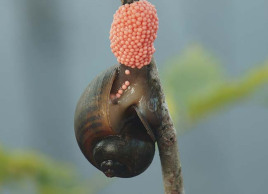

系统首页
虫害百科
虫害预警
用户主页
用户信息
搜索记录
退出登录
用户反馈
1 形态特征
1.1 基本介绍
1.2 地理分布
2 主要危害
2.1 基本情形
3 防治要点
3.1 农业防治
3.2 生物防治
4 用户留言
稻飞虱
学名：Nilaparvata lugens Stal

形态特征
基本介绍
稻飞虱，属于同翅目(Homoptera)飞虱科(Delphacidae)，俗称蠓子虫、火蠓虫、响虫。以刺吸植株汁液危害水稻等作物。我国为害水稻的飞虱主要有三种：褐飞虱 (Nilaparvata lugens Stal)、白背飞虱 (Sogatella furcifera (Horvath)) 和灰飞虱 (Laodelphax striatellus Fallén)，其中以褐飞虱发生和为害最重，白背飞虱次之。
地理分布
3种飞虱在我国各省、自治区均有发生。 褐飞虱：为偏南方种类，在长江流域及其以南地区为害严重。 白背飞虱：为广跨偏南方的种类，为害性仅次于褐飞虱。 灰飞虱：为广跨偏北种类。
主要危害
基本情形
防治要点
农业防治
生物防治
用户留言